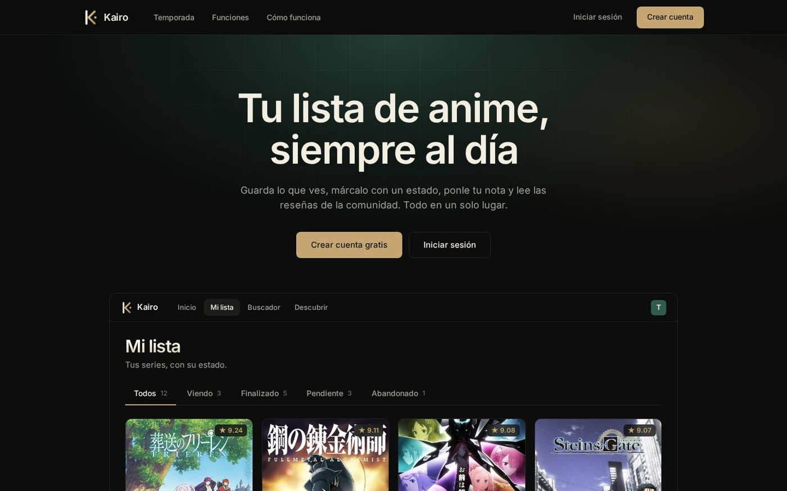
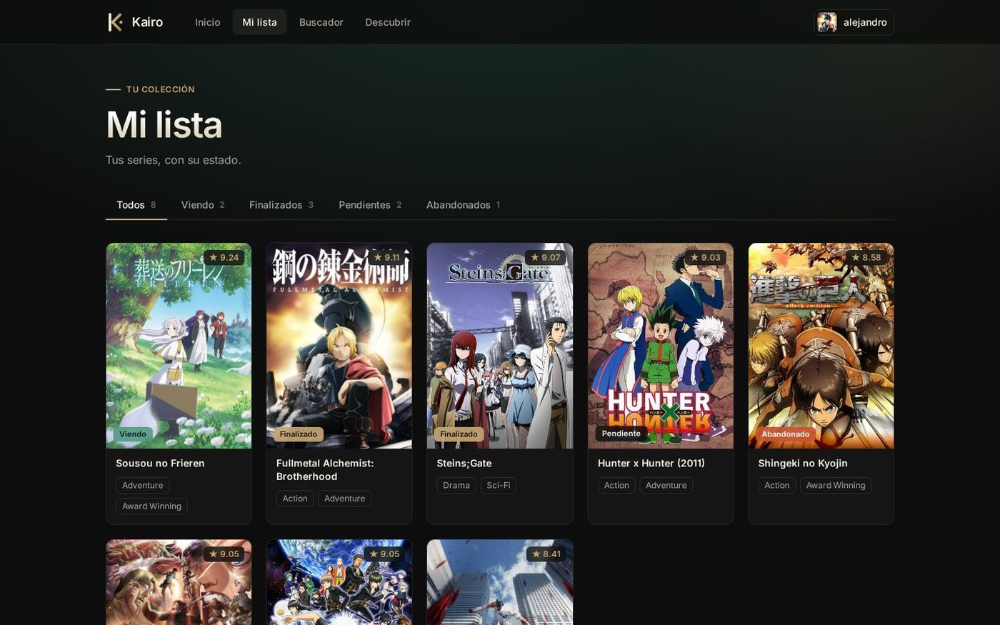
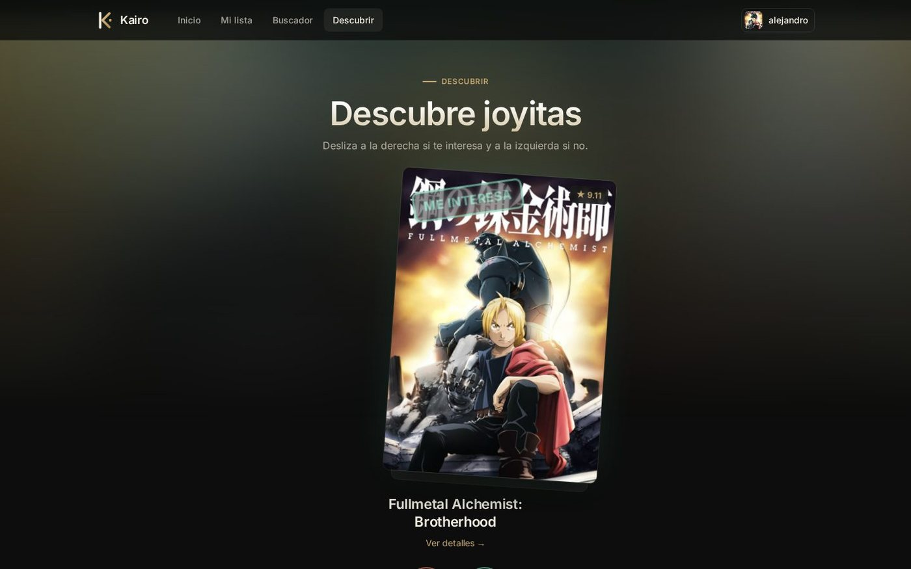
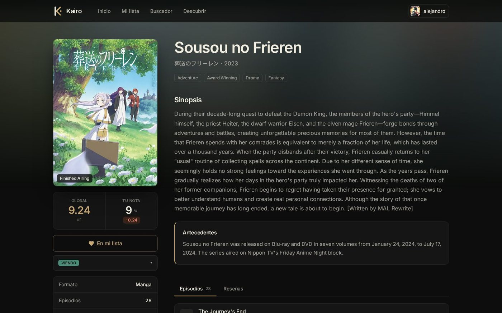
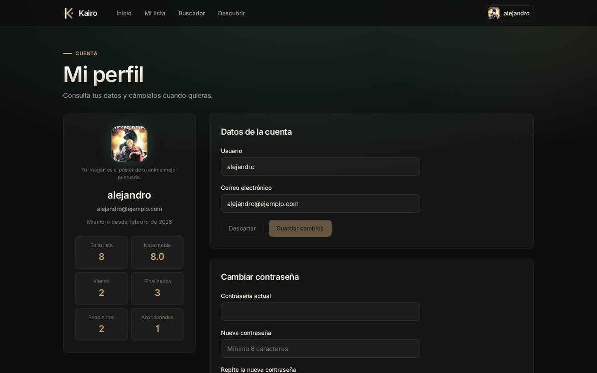

Busca anime, llévalo al día y puntúalo.
Aplicación web full-stack para el seguimiento personal de anime sobre el catálogo de MyAnimeList.
🌐 Demo · ⚙️ API · Capturas · Arranque en local

La demo corre en el plan gratuito de Vercel: la primera petición tras un rato sin uso puede tardar unos segundos. Puedes crear una cuenta con cualquier usuario y contraseña.
| 🏠 Landing pública | Réplica de «Mi lista» con datos reales de la API y la temporada en emisión, con registro e inicio de sesión a un clic |
| 🔐 Cuenta segura | Registro, inicio de sesión con JWT y recuperación de contraseña con un código de 6 dígitos por e-mail (guardado con hash, caduca a los 15 min y con límite de intentos) |
| 🔎 Buscar y descubrir | Buscador simple y avanzado (formato, estado, fechas, puntuación), top de temporada, recomendaciones y Descubrir con tarjetas que se deslizan: derecha te interesa, izquierda no |
| 📺 Ficha completa | Sinopsis, géneros, estudios, episodios y reseñas de la comunidad |
| 📚 Mi lista | Cada serie con su estado (viendo, finalizado, pendiente, abandonado) y tu nota; filtros con contadores |
| 👤 Perfil | Ver y editar usuario y correo, cambiar contraseña y eliminar la cuenta. Tu imagen de perfil es el póster de tu anime mejor puntuado |
| 🛡️ Contenido apto | Se filtran las series +18 en listas, buscadores y descubrimiento |
 Mi lista |  Descubrir (deslizar tarjetas) |
 Ficha del anime |  Perfil |
┌──────────────┐ Jikan API (catálogo de anime)
│ frontend │ ───────────────────────────────►
│ Angular :4200│
│ │ HTTP + JWT ┌─────────────┐ Sequelize ┌────────────┐
│ │ ────────────► │ backend │ ──────────► │ PostgreSQL │
└──────────────┘ │ Express:3000│ └────────────┘
└─────────────┘
| Capa | Tecnologías |
|---|---|
| Cliente | Angular 20 (componentes standalone, carga diferida de rutas), TypeScript, CSS propio |
| API | Node.js, Express 5, TypeScript, Sequelize, JWT, bcrypt, express-validator, rate limiting |
| Datos | PostgreSQL (Neon) para usuarios y favoritos · API Jikan para el catálogo |
| Despliegue | Vercel (cliente estático y API como función serverless) |
Necesitas Node.js 20+ y una base de datos PostgreSQL.
# Backend (http://localhost:3000)
cd backend
cp .env.example .env # rellena DATABASE_URL y JWT_SECRET
npm install
npm run dev
# Frontend (http://localhost:4200), en otra terminal
cd frontend
npm install
npm start
El frontend usa http://localhost:3000/api cuando se abre desde localhost y el backend desplegado en cualquier otro dominio (API_URL en frontend/src/app/services/auth-service.ts). Las tablas se crean solas al arrancar el backend (sequelize.sync).
| Variable | Para qué |
|---|---|
DATABASE_URL |
Conexión a PostgreSQL (con ?sslmode=require en Neon, Supabase…) |
JWT_SECRET |
Firma de tokens |
SMTP_HOST, SMTP_PORT, SMTP_USER, SMTP_PASS, MAIL_FROM |
Envío del código de «olvidé mi contraseña». Sin ellas, en local el código se muestra por consola |
| Método | Ruta | Acceso |
|---|---|---|
| POST | /api/auth/register, /api/auth/login, /api/auth/logout |
público |
| POST | /api/auth/forgot-password, /api/auth/reset-password |
público |
| GET | /api/auth/user |
autenticado |
| GET · PATCH · DELETE | /api/user/profile (ver, editar, eliminar cuenta) |
autenticado |
| PUT | /api/user/password |
autenticado |
| GET · POST | /api/user/favorites |
autenticado |
| GET · DELETE | /api/user/favorites/:animeId |
autenticado |
| PATCH | /api/user/favorites/:animeId/state · /score |
autenticado |
| GET | /api/user/favorite/check/:animeId |
autenticado |
animewatch-tracker/
├── frontend/ # Angular 20: páginas (landing, inicio, buscador, descubrir, mi lista, perfil, ficha), componentes y servicios
├── backend/ # Express 5: rutas, controladores, modelos Sequelize, middleware y utilidades (JWT, correo)
└── docs/ # Capturas de pantalla
Proyecto personal de Alejandro Plata Cortés · Datos de series y pósters: MyAnimeList, a través de la API Jikan.